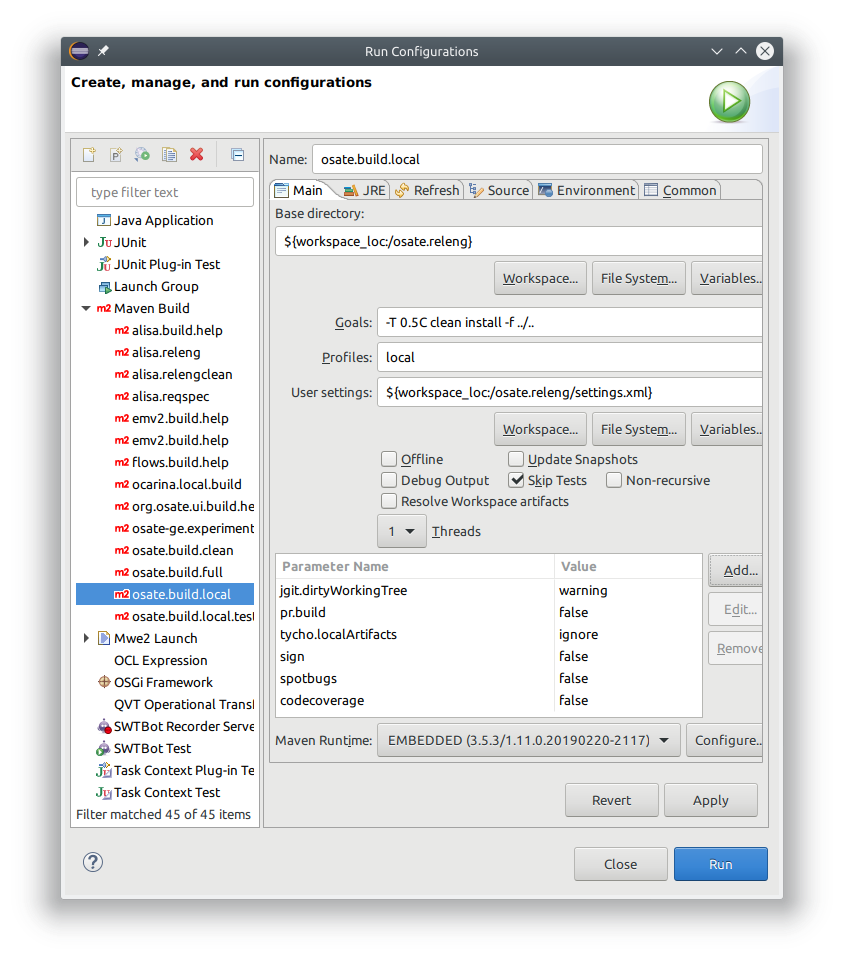

Building OSATE¶
OSATE is built using maven with the tycho plugin. Maven can be run inside Eclipse or from the command line.
To run the build inside Eclipse we provide a couple of launch configurations in project osate.releng. The launch configurations can be run from Eclipse’s Run Configurations... dialog. They are inserted under the Maven Build category.
The available launch configurations are
- osate.build.local - build OSATE for the local operating system, e.g., build the windows version on a windows machine.
- osate.build.local.tests - same as osate.build.local but also run all available tests
- osate.build.full - build for all platforms, run all tests
The build can be configured by modifying the launch configuration.

Available profiles local and full determine if the build is for the local operating system only or for all operating systems.
Used parameters are
- tycho.dirtyWorkingTree - Issue a warning or an error if there are files that uncommitted source files in the build.
- pr.build - true build a pull request (no product archive created), false build the product(s)
- tycho.localArtifacts - ignore only use artifacts from the current build and specified repositories to resolve dependencies.
- sign - true perform jar signing during the build, false don’t sign jars
- spotbugs - true run spotbugs during the build, false don’t run spotbugs
- codecoverage - true run jacoco to create a code coverage report, false don’t run jacoco
The created archive file (*.zip and/or *.tar.gz) are created in project org.osate.build.product in subdirectory target/products.
Note that the very first build usually fails in project org.osate.reqtrace, but subsequent build should succeed.